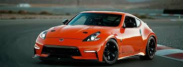

NUESTROS COCHES FAVORITON SON:
Nissan, combinando potencia, funcionalidad y personalización. La Frontier NP300 destaca por su resistencia y versatilidad, mientras que el Nissan GT-R refleja tu pasión por la velocidad y el alto desempeño. Te gusta el estilo único con un Tsuru tuneado, que demuestra creatividad y modificaciones personalizadas. Finalmente, el Nissan 370Z completa tu selección con su diseño deportivo y ágil. En resumen, tu preferencia automovilística combina fuerza, velocidad y personalidad. 🚗
| FRONTIER NP300 | NISSAN GTR | TZURU TUNEADO | NISSAN Z370 |
|---|---|---|---|
|
|
|
 |
| Se destacan por incluir Asistencias de Frenado ABS, EBD y BA, Control Dinámico Vehicular (VDC) y Diferencial de Deslizamiento Limitado (LSD) | conocido como "Godzilla", es un superauto japonés de alto rendimiento con una larga y rica historia. Es un coche deportivo de dos puertas, con tracción en las cuatro ruedas, que ha sido un referente en la industria automotriz por su potencia, velocidad y tecnología | ha sido modificado para tener un aspecto más deportivo y personalizado, con modificaciones como rines | motor V6 de 3.7 litros, que ofrece 332 caballos de fuerza y una experiencia de conducción emocionante. La transmisión manual de 6 velocidades y la automática de 7 |
Jesus Melesio Galicia |
|---|